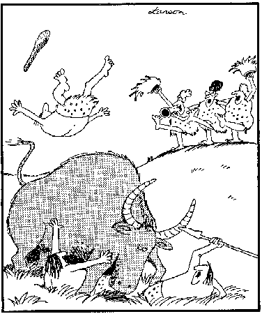

Fossil Hominids: Neandertal injuries
Many Neandertal skeletons show signs of broken bones and other traumas. A study by Erik Trinkaus and Tomy Berger showed that the pattern of bone injuries was very similar to that of rodeo riders (Gore 1996). This suggests that Neandertal hunting involved quite a lot of close-quarters contact with large and savage animals. Neandertals apparently never invented thrown projectiles, and their spears seem to have been designed for thrusting while being held. One can certainly see why this modus operandi might result in frequent injuries when hunting big game.
In light of which, this cartoon seems particularly apt:

Gore R. (1996): Neandertals. National Geographic, 189(January):2-35.
This page is part of the Fossil Hominids FAQ at the talk.origins Archive.
Home Page
| Species | Fossils
| Creationism | Reading | References
Illustrations | What's New | Feedback
| Search | Links
| Fiction
http://www.talkorigins.org/faqs/homs/rodeo.html, 10/13/98
Copyright © Jim Foley
|| Email me